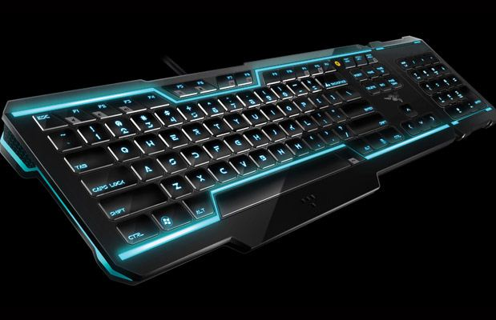
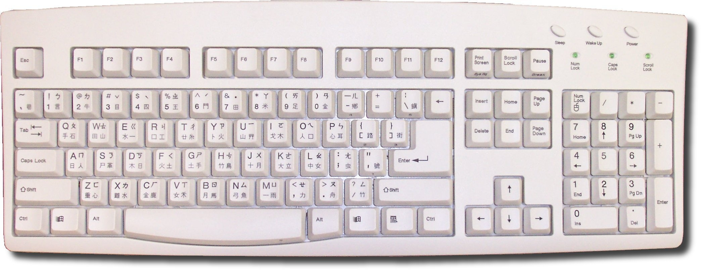
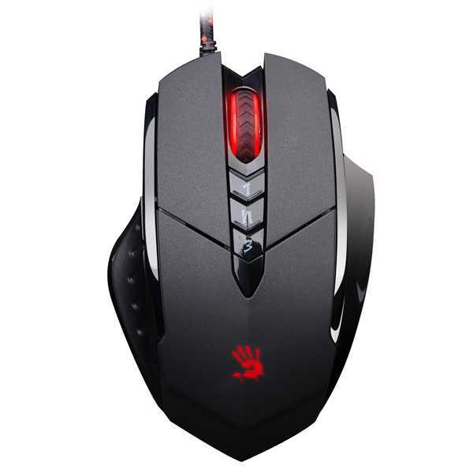
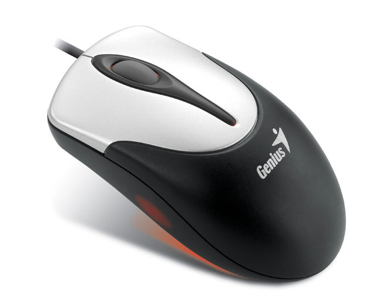
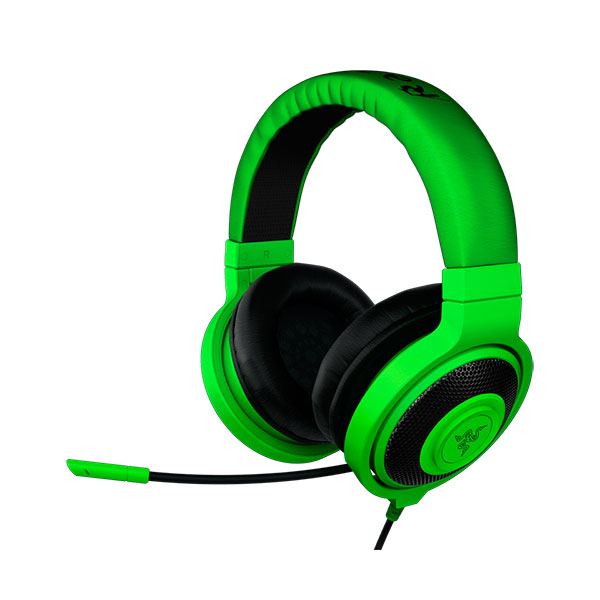

Как собрать компьютер
Шаг 3.Девайсы
В разделе девайсы мы рассмотрим клавиатуру, мышку, игровые наушники.
Клавиатура
Чем отличается игровая от обычной?У игровой клавиатуры масса дополнительных кнопок, которых нет на обычной. Например, игровая клавиатура имеет специальные кнопки перезарядки, пополнить здоровье и т.д., на простой клавиатуре такие специальные кнопки отсутствуют. Но стоит отметить, что игровая клавиатура стоит намного дороже, нежели обычная. На игровых клавиатурах удобно играть практически во все онлайн игры, ведь там достаточно удобно располагаются все горячие клавиши. Но такие клавиатуры нужны только для тех, кто постоянно играет в различные игры, если же человек любит иногда поиграть, то вполне сойдет и обычная.Вот фотографии:

Это игровая клавиатура.
А это обычная.игровые мышки.
Главная особенность игровой мыши- это наличие кнопки тройной выстрел для стрельбы из AK-47 в Counter Strike. Также игровая мышь отличается от обычной тем, что она более послушная и точная в движениях и скорее всего лазерная, а не оптическая, то есть когда играешь допустим в "контру", иногда в нужный момент требуется быстро, за доли секунды, среагировать, например противник выбежал из-за угла и нужно срочно быстрее соперника навести прицел на него и выстрелить, если наведешь не точно, то можешь промахнуться(бывает когда играешь на простой мыши, в критический момент пытаешься навести прицел на противника, а мышь тупит, ты вроде сделал движение мышью, а прицел сдвинулся коряво, из-за непослушности мыши, такую мышь хочется выкинуть), противник быстрее тебя прицелиться и выстрелит, вот здесь и требуется послушность и точность мыши. Чувствительность мыши измеряется в единицах dpi обычно в игровых мышах есть еще и функция переключения единиц dpi переключателем, это можно делать на ходу прямо в игре в любой момент. Могут присутствовать настройка и сохранение нескольких комбинаций нажатий кнопок мыши, так же полезно в некоторых игра. простые мыши большинство этих функций не имеют и не очень послушны(еще пример непослушности мыши, работаешь с графикой или чертежом и тебе нужно навести курсор мыши в определенную точку, пытаешься навести, а курсор то перескочит точку, то не дотягивается до точки, при этом ты мышью работаешь аккуратно и плавно и так паришься некоторое время пока не наведешь). И еще один момент игровые мыши более эргономичны по форме и их удобнее в руке держать.

Это игровая мышка

Это стандартная мышка
Игровые наушники
Игровые наушники они более удобнее чем, обычные.Так же они еще отличаются частотами,глубиной звука и тд. Что это озночает? То есть у игровых наушников звук четкий, не шумит в ушах,иногда и такое бывает у обычных. Лично мое предпочтение это к этим наушника razer kraken pro.

© Николай Куренков 112 группа